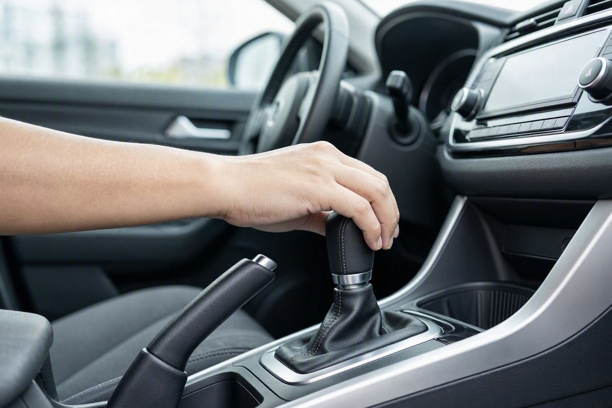
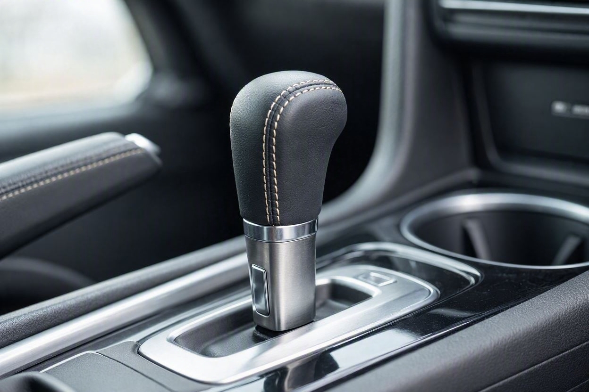
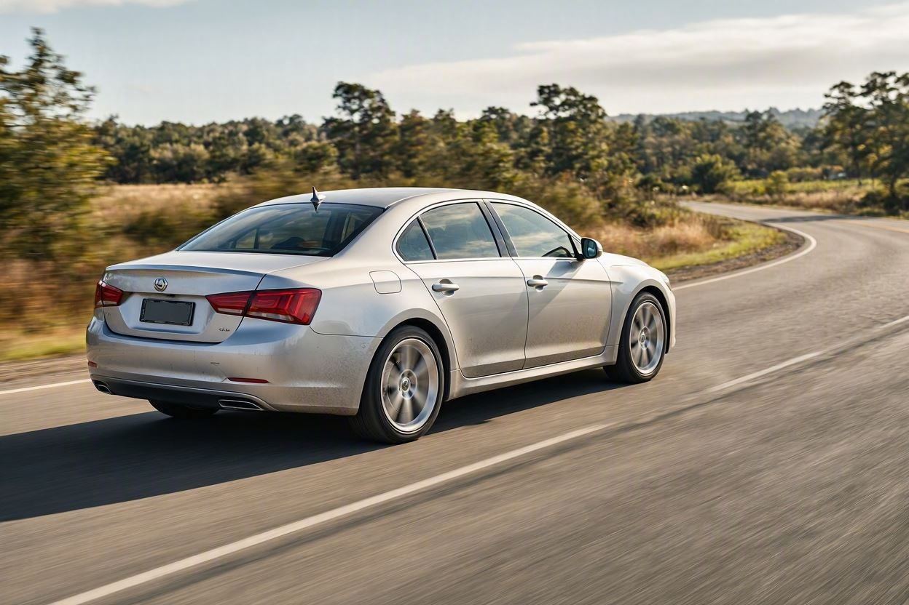
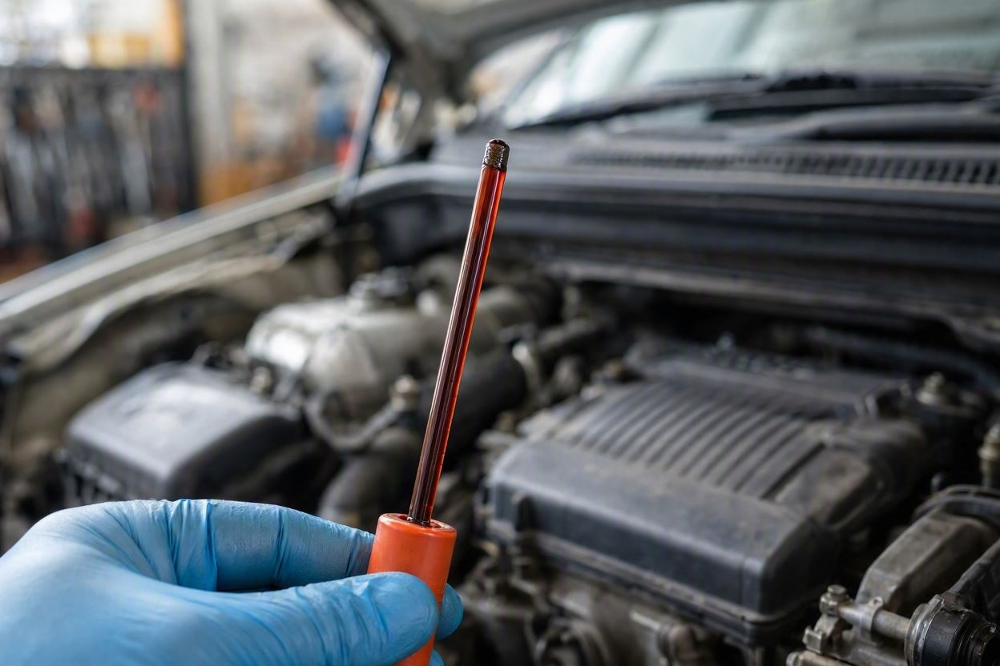

تست گیربکس اتوماتیک قبل از خرید؛ علائم تقه، تأخیر و لغزش دنده
فرض کنید یک خودروی اتوماتیک را برای خرید دیدهاید و همهچیز سرجای پارک خوب بهنظر میرسد. اما گیربکس اتوماتیک برخلاف بدنه و ظاهر، مشکلاتش را بیشتر در حرکت نشان میدهد. یک تقه کوچک هنگام جاگیری دنده یا مکث نیمثانیهای در واکنش گاز، همان چیزی است که میتواند تفاوت یک معامله خوب و یک تعمیر سنگین باشد.
برای تست گیربکس اتوماتیک قبل از خرید، خودرو را در حرکت واقعی بررسی کنید. سه نشانه مهم را دنبال کنید: تقه یا ضربه هنگام تعویض دنده، تأخیر در جاگیری دنده پس از انتخاب D یا R، و لغزش دنده که در آن موتور اوج میگیرد ولی خودرو متناسب شتاب نمیگیرد. رنگ و بوی روغن گیربکس هم مهم است. تشخیص قطعی نیازمند تست تخصصی و دیاگ است.
خلاصه در یک دقیقه
- گیربکس اتوماتیک را حتماً در حرکت و در دندههای مختلف تست کنید، نه فقط در حالت پارک.
- تقه هنگام جاگیری دنده میتواند نشانه مشکل مکانیکی یا کاهش فشار روغن باشد.
- تأخیر بیش از یک تا دو ثانیه در جاگیری D یا R نشانه هشدار است.
- لغزش دنده، یعنی بالا رفتن دور موتور بدون شتاب متناسب، از جدیترین علائم است.
- روغن سوخته با بوی تند و رنگ تیره، خودش یک هشدار مستقل است.
چرا تست در حرکت مهم است؟
گیربکس اتوماتیک مجموعهای از قطعات مکانیکی، هیدرولیکی و الکترونیکی است که فقط زیر بار واقعی رفتار درستش را نشان میدهد. بسیاری از خودروها سرجای پارک کاملاً سالم بهنظر میرسند، اما هنگام شتابگیری یا تعویض دنده مشکل نشان میدهند. برای همین بررسی درست این قطعه بدون رانندگی تقریباً بیمعنی است.
پیش از خرید یک خودروی اتوماتیک، بهتر است هم تست رانندگی داشته باشید و هم بررسی تخصصی. مجموعههایی مثل کارماچک گیربکس را در کنار موتور و بدنه بررسی میکنند، چون سلامت گیربکس مستقیم روی هزینه و ارزش معامله اثر میگذارد.
تقه هنگام تعویض دنده
تقه یا ضربه، صدا و لرزشی است که هنگام جابهجایی اهرم دنده یا هنگام تعویض خودکار دنده در حرکت حس میشود. در یک گیربکس سالم، تعویض دنده باید نرم و تقریباً نامحسوس باشد.

وقتی اهرم را از حالت پارک به D یا R میبرید و یک ضربه محکم حس میکنید، ممکن است مشکل از پایههای گیربکس، فشار روغن یا سایش داخلی باشد. یک تقه ملایم در بعضی خودروها طبیعی است، اما ضربه شدید یا صدای فلزی جدی است.
تأخیر در جاگیری دنده
تأخیر یعنی فاصله زمانی بین انتخاب دنده و واکنش واقعی خودرو. در حالت سالم، وقتی اهرم را روی D یا R میگذارید، خودرو تقریباً بلافاصله آماده حرکت است. اگر بین انتخاب دنده و درگیر شدن آن یک تا دو ثانیه یا بیشتر مکث وجود دارد، این یک نشانه مهم است.
تأخیر معمولاً به افت فشار روغن، فرسودگی صفحات کلاچ داخلی یا مشکل واحد کنترل گیربکس مربوط میشود. این علامت را بهویژه هنگام تعویض بین D و R در مانور پارک بهخوبی میتوان حس کرد.
- مکث محسوس هنگام گذاشتن اهرم روی D پس از توقف کامل.
- واکنش دیرهنگام خودرو هنگام فشار دادن پدال گاز.
- تأخیر بیشتر در حالت سرد که با گرمشدن کمتر میشود اما کامل از بین نمیرود.
لغزش دنده چیست و چرا خطرناک است؟
لغزش دنده یکی از جدیترین علائم خرابی گیربکس اتوماتیک است. در این حالت دور موتور بالا میرود اما خودرو به همان نسبت شتاب نمیگیرد؛ انگار موتور و چرخها با هم درست درگیر نیستند.

لغزش را میتوانید اینطور حس کنید: هنگام شتابگیری، عقربه دور موتور ناگهان بالا میرود ولی سرعت خودرو کند اضافه میشود. گاهی هم دنده در سربالایی یا هنگام سبقت رها میشود. این علامت اغلب نشانه فرسودگی جدی داخل گیربکس است و تعمیر آن معمولاً پرهزینه است.
چون هزینه بازسازی گیربکس اتوماتیک بالاست، اگر لغزش دیدید حتماً پیش از هر تصمیمی بررسی کامل خودرو پیش از خرید را انجام دهید و اثر این ایراد را روی قیمت لحاظ کنید.
نقش روغن گیربکس در تشخیص
روغن گیربکس اتوماتیک یکی از سادهترین و مهمترین سرنخهاست. در بسیاری از خودروها میتوان رنگ و بوی آن را بررسی کرد.

- روغن سالم معمولاً شفاف و مایل به قرمز است.
- روغن تیره، کدر یا با بوی سوختگی نشانه فرسودگی و گرمای بیشازحد است.
- وجود ذرات فلزی در روغن یعنی سایش داخلی جدی.
بو و رنگ روغن بهتنهایی برای تشخیص قطعی کافی نیست، اما وقتی کنار علائم تقه، تأخیر یا لغزش قرار بگیرد، تصویر روشنتری از وضعیت گیربکس میدهد.
جدول علائم و شدت آنها
| نشانه | علت احتمالی | شدت |
|---|---|---|
| تقه ملایم هنگام جاگیری | پایه گیربکس، تنظیمات جزئی | کم تا متوسط |
| ضربه شدید یا صدای فلزی | سایش داخلی، افت فشار روغن | جدی |
| تأخیر در جاگیری D یا R | فشار روغن، کلاچ داخلی | متوسط تا جدی |
| لغزش دنده هنگام شتاب | فرسودگی داخلی گیربکس | بسیار جدی |
| روغن تیره و بوی سوختگی | گرمای بیشازحد، سرویس نشدن | جدی |
پیش از معامله، گیربکس را دقیق بررسی کنید
هزینه بازسازی گیربکس اتوماتیک معمولاً بالاست. یک بررسی تخصصی میتواند وضعیت واقعی گیربکس را روشن کند و ابهام معامله را کمتر کند.
شروع کارشناسی خودروتست عملی مرحلهبهمرحله
این مسیر ساده به شما کمک میکند بدون نیاز به ابزار خاص، وضعیت اولیه گیربکس را بسنجید:
- مرحله اول:موتور را روشن کنید و اجازه دهید کامل گرم شود؛ تست روی موتور سرد گمراهکننده است.
- مرحله دوم:در حالت توقف، اهرم را چند بار بین P، R، N و D جابهجا کنید و به تقه و تأخیر دقت کنید.
- مرحله سوم:در مسیر خلوت شتاب بگیرید و ببینید تعویض دندهها نرم است یا با ضربه و مکث همراه است.
- مرحله چهارم:در سربالایی یا هنگام سبقت، به لغزش احتمالی و بالا رفتن بیدلیل دور موتور توجه کنید.
- مرحله پنجم:در صورت امکان رنگ و بوی روغن گیربکس را بررسی کنید و نتیجه را کنار بقیه علائم بگذارید.
کارماچک فقط ایراد گیربکس را شناسایی نمیکند؛ اثر آن روی هزینه تعمیر و ارزش واقعی معامله را هم مشخص میکند. برای همین نتیجه تست رانندگی در کنار بررسی فنی معنای درست پیدا میکند.
چه زمانی حتماً سراغ کارشناس بروید؟
بعضی علائم را نباید نادیده گرفت. اگر لغزش دنده، ضربه شدید یا تأخیر واضح دیدید، یا روغن گیربکس سوخته بود، بررسی تخصصی ضروری است. همچنین اگر خودرو گیربکس تعویضشده یا سابقه تعمیر اساسی دارد، بدون تأیید کارشناس تصمیم نگیرید.
اگر موضوع قیمت برایتان مهم است، میتوانید تأثیر ایراد گیربکس بر ارزش و قیمت خودرو را هم بسنجید تا در چانهزنی واقعبینانه عمل کنید.
جمعبندی
گیربکس اتوماتیک یکی از گرانترین قطعات خودرو برای تعمیر است و ظاهر سالم خودرو چیزی درباره سلامت آن نمیگوید. سه نشانه تقه، تأخیر و لغزش، مهمترین سرنخها برای تشخیص اولیه هستند و بهتر است در تست رانندگی واقعی دنبالشان باشید. با این حال تشخیص قطعی نیازمند تست تخصصی و دیاگ است. تصمیم درست وقتی گرفته میشود که این علائم کنار بررسی فنی کامل دیده شوند.
مطمئنتر معامله کنید
اگر میخواهید پیش از خرید از سلامت گیربکس و موتور خودرو مطمئن شوید، میتوانید رزرو کارشناسی را ثبت کنید تا تست فنی و بررسی گیربکس با هم انجام شود.
ثبت درخواست کارشناسیسؤالات متداول
آیا گیربکس اتوماتیک را میتوان بدون رانندگی تست کرد؟
بهطور کامل خیر. بعضی علائم مثل تقه هنگام جاگیری در حالت توقف حس میشوند، اما تأخیر و بهویژه لغزش دنده فقط در حرکت و زیر بار واقعی مشخص میشوند. برای همین تست رانندگی پس از گرمشدن موتور بخش جدانشدنی بررسی گیربکس اتوماتیک است.
لغزش دنده چه فرقی با تأخیر دارد؟
تأخیر یعنی خودرو دیر به انتخاب دنده واکنش نشان میدهد، اما بعد درست حرکت میکند. لغزش یعنی دنده درگیر میشود ولی قدرت بهدرستی منتقل نمیشود؛ دور موتور بالا میرود بدون شتاب متناسب. لغزش معمولاً جدیتر است و به فرسودگی داخلی گیربکس اشاره دارد.
رنگ روغن گیربکس اتوماتیک باید چطور باشد؟
روغن سالم معمولاً شفاف و مایل به قرمز است. روغن تیره، کدر یا با بوی سوختگی نشانه گرمای بیشازحد و فرسودگی است. البته رنگ روغن بهتنهایی برای تشخیص قطعی کافی نیست و باید کنار علائم رانندگی و بررسی فنی سنجیده شود.
آیا تقه هنگام تعویض دنده همیشه خطرناک است؟
نه همیشه. در بعضی خودروها یک تقه بسیار ملایم طبیعی است. اما ضربه شدید، صدای فلزی یا تقهای که با تأخیر و لرزش همراه باشد، نشانه جدی است و باید توسط کارشناس بررسی شود. شدت و همراهی آن با علائم دیگر مهم است.
هزینه تعمیر گیربکس اتوماتیک چقدر است؟
هزینه دقیق به مدل خودرو، نوع گیربکس و شدت خرابی بستگی دارد و بدون بررسی نمیتوان رقم قطعی داد. اما بهطور کلی بازسازی گیربکس اتوماتیک یکی از پرهزینهترین تعمیرهای خودرو است. برای همین شناسایی زودهنگام ایراد پیش از خرید اهمیت زیادی دارد.